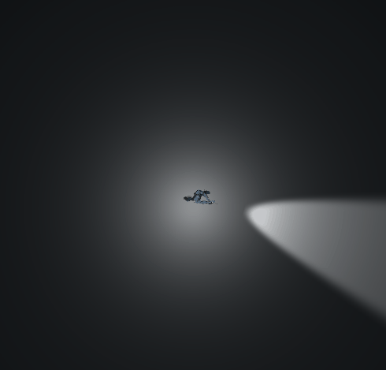

Dimitri Charneux
Développeur Unity
Loos 59120
dimitri.charneux@gmail.com
06.69.17.06.34
Téléchargez le CV ou consultez mon profil LinkedIn
Compétences
C#, Unity
Java
SQL
C++
Blender
Langages
Français
Anglais
Jeu de Zombie
Objectifs
Réaliser un jeu 3D pour apprendre la gestion du pathfinding avec Unity :
- Gestion du pathfinding grâce au NavMesh
- Gestion des collisions
- Gestion des sons lors des actions de l'utilisateur (tir/recharge/etc)
- Utilisation des particules
- Réalisation de modèles 3D et d'animations sous Blender
Démonstration
Le jeu
Ce jeu est un TPS vue de dessus dans lequel il faut tuer tous les zombies sans se faire tuer. Le joueur dispose d'une barre de vie et d'un nombre de munitions pour réussir le niveau. Les zombies suivent constamment le joueur et le frappent quand il est à portée.
Le jeu se veut très sombre afin d'obliger le joueur à regarder autour de lui grâce à la lampe accrochée au joueur. Les tirs éclairent également brièvement la zone.
Le joueur a la possibilité de ramasser des caisses de soins et de munitions afin de récupérer de la vie ou des balles.
Caisse de soin
Caisse de munitions
Des particules ont été utilisées pour représenter le sang des zombies et la flamme sortant du canon lors d'un tir.
Giclée de sang

Particule lors d'un tir
Modélisation 3D
J'ai modélisé les décors du jeu, les zombies et le personnage avec le logiciel Blender.
Modèles 3D du personnage et d'une caisse de munitions
Modèle 3D d'un arbre et d'un revolver
J'ai également réalisé des animations de marche pour le zombie et le joueur à partir du modèle 3D du personnage.
Déplacement du joueur, d'un zombie et attaque d'un zombie